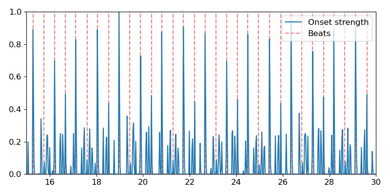

librosa.beat.beat_track¶
-
librosa.beat.beat_track(y=None, sr=22050, onset_envelope=None, hop_length=512, start_bpm=120.0, tightness=100, trim=True, bpm=None, units='frames')[source]¶ Dynamic programming beat tracker.
- Beats are detected in three stages, following the method of [1]:
Measure onset strength
Estimate tempo from onset correlation
Pick peaks in onset strength approximately consistent with estimated tempo
- 1
Ellis, Daniel PW. “Beat tracking by dynamic programming.” Journal of New Music Research 36.1 (2007): 51-60. http://labrosa.ee.columbia.edu/projects/beattrack/
- Parameters
- ynp.ndarray [shape=(n,)] or None
audio time series
- srnumber > 0 [scalar]
sampling rate of y
- onset_envelopenp.ndarray [shape=(n,)] or None
(optional) pre-computed onset strength envelope.
- hop_lengthint > 0 [scalar]
number of audio samples between successive onset_envelope values
- start_bpmfloat > 0 [scalar]
initial guess for the tempo estimator (in beats per minute)
- tightnessfloat [scalar]
tightness of beat distribution around tempo
- trimbool [scalar]
trim leading/trailing beats with weak onsets
- bpmfloat [scalar]
(optional) If provided, use bpm as the tempo instead of estimating it from onsets.
- units{‘frames’, ‘samples’, ‘time’}
The units to encode detected beat events in. By default, ‘frames’ are used.
- Returns
- tempofloat [scalar, non-negative]
estimated global tempo (in beats per minute)
- beatsnp.ndarray [shape=(m,)]
estimated beat event locations in the specified units (default is frame indices)
Note
If no onset strength could be detected, beat_tracker estimates 0 BPM and returns an empty list.
- Raises
- ParameterError
if neither y nor onset_envelope are provided
or if units is not one of ‘frames’, ‘samples’, or ‘time’
See also
Examples
Track beats using time series input
>>> y, sr = librosa.load(librosa.util.example_audio_file())
>>> tempo, beats = librosa.beat.beat_track(y=y, sr=sr) >>> tempo 64.599609375
Print the first 20 beat frames
>>> beats[:20] array([ 320, 357, 397, 436, 480, 525, 569, 609, 658, 698, 737, 777, 817, 857, 896, 936, 976, 1016, 1055, 1095])
Or print them as timestamps
>>> librosa.frames_to_time(beats[:20], sr=sr) array([ 7.43 , 8.29 , 9.218, 10.124, 11.146, 12.19 , 13.212, 14.141, 15.279, 16.208, 17.113, 18.042, 18.971, 19.9 , 20.805, 21.734, 22.663, 23.591, 24.497, 25.426])
Track beats using a pre-computed onset envelope
>>> onset_env = librosa.onset.onset_strength(y, sr=sr, ... aggregate=np.median) >>> tempo, beats = librosa.beat.beat_track(onset_envelope=onset_env, ... sr=sr) >>> tempo 64.599609375 >>> beats[:20] array([ 320, 357, 397, 436, 480, 525, 569, 609, 658, 698, 737, 777, 817, 857, 896, 936, 976, 1016, 1055, 1095])
Plot the beat events against the onset strength envelope
>>> import matplotlib.pyplot as plt >>> hop_length = 512 >>> plt.figure(figsize=(8, 4)) >>> times = librosa.frames_to_time(np.arange(len(onset_env)), ... sr=sr, hop_length=hop_length) >>> plt.plot(times, librosa.util.normalize(onset_env), ... label='Onset strength') >>> plt.vlines(times[beats], 0, 1, alpha=0.5, color='r', ... linestyle='--', label='Beats') >>> plt.legend(frameon=True, framealpha=0.75) >>> # Limit the plot to a 15-second window >>> plt.xlim(15, 30) >>> plt.gca().xaxis.set_major_formatter(librosa.display.TimeFormatter()) >>> plt.tight_layout() >>> plt.show()
